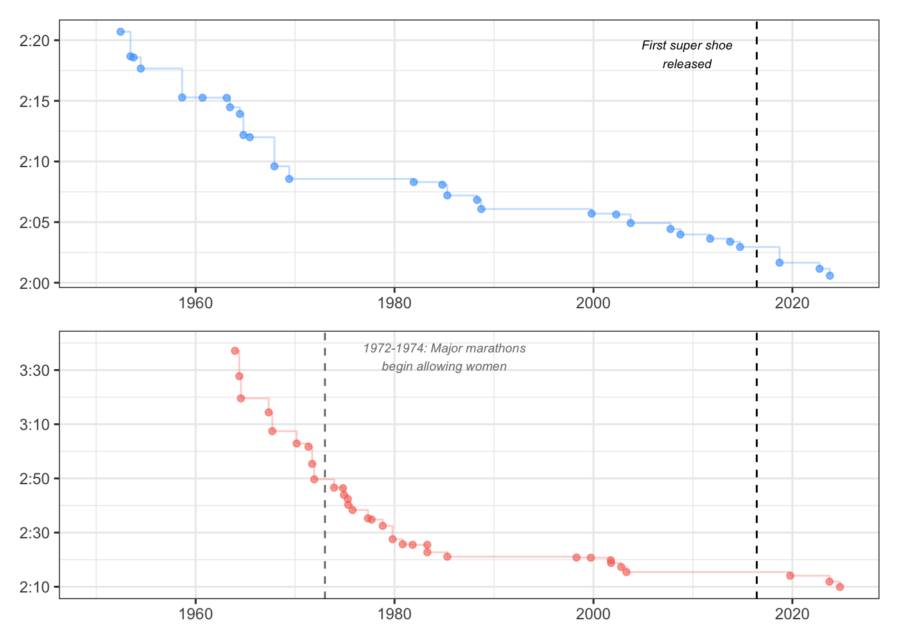
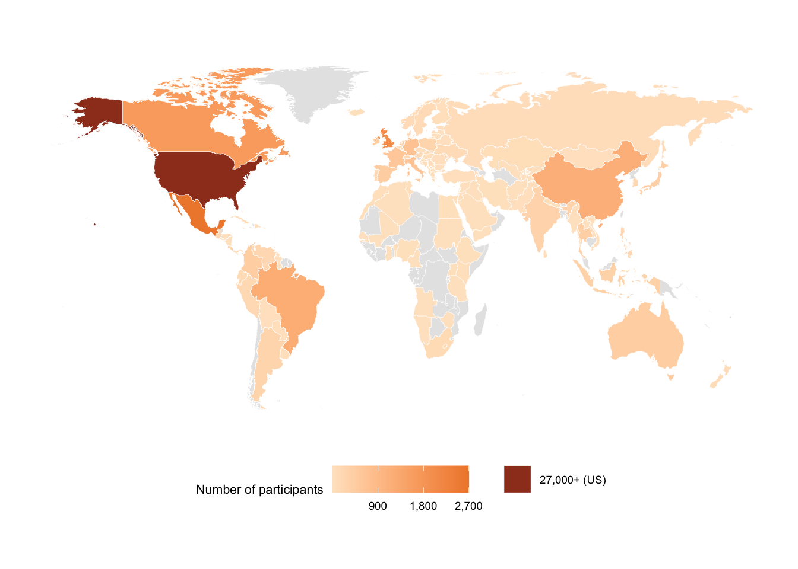
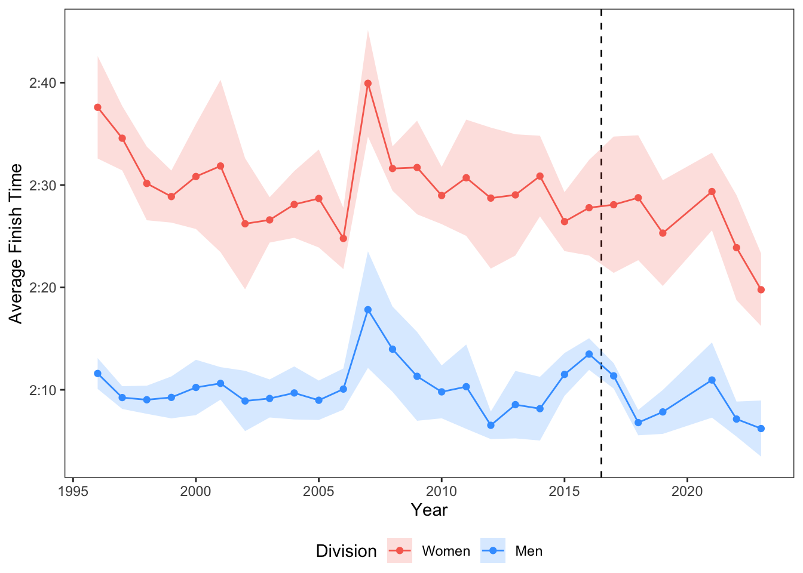
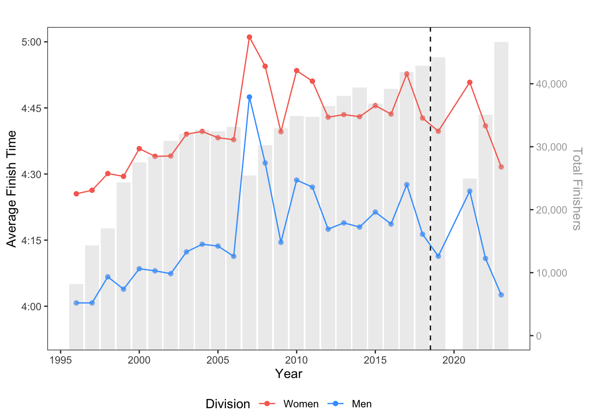
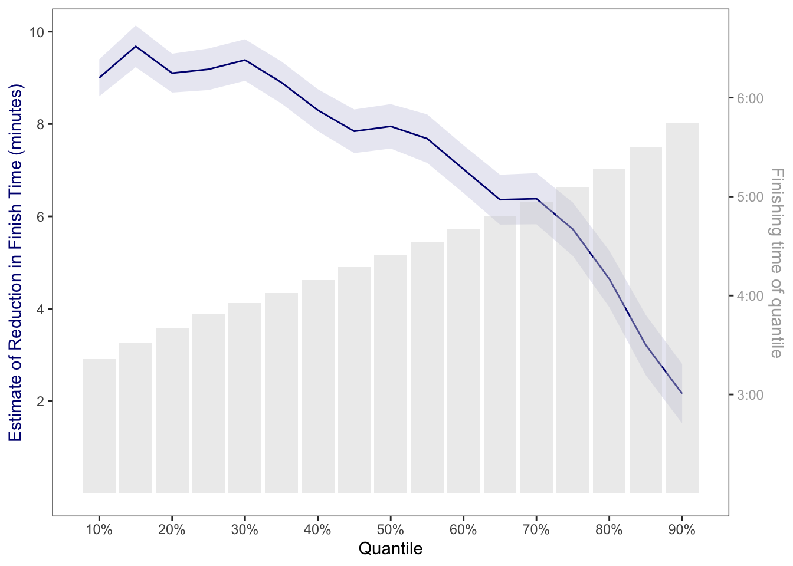

Sole searching: How super shoes have changed marathoning
Sports
In May, I entered the 2025 RSS Competition for Statistical Excellence in Early Career Writing. I really enjoyed applying statistics to my favorite hobby (running) in order to analyze a question at the forefront of the sport!
“All you need is a pair of shoes.” It’s a simple phrase—maybe one a friend has used either to encourage you to try running or to simply claim it as one of the world’s most accessible sports. But over the last eight years, it has become abundantly clear that for competitive runners, not all shoes are created equal. In 2016, Nike released the Vaporfly 4%, the world’s first super shoe, changing the trajectory of running forever(Aciman 2024). Most broadly, a super shoe is a lightweight running shoe with a carbon-fiber plate through the middle of the sole. The stiffness of the plate rolls your foot forward with each step, decreasing the amount you need to push off the ground. The result is better running economy—less energy is needed to run the same pace, meaning runners can conserve that energy to run farther, or expend it to run faster(Goldstein 2023).
The impact of super shoes has been most prevalent in long distance events, specifically the marathon, a popular 42.195 kilometer (26.2 mile) road race. The top 11 men’s and top 5 women’s marathon times have all come since the introduction of super shoes in 2016. Figure 1 displays the progression of the men’s and women’s world marathon record dating back to 1950 (“Marathon World Record Progression” 2025). Dennis Kimetto held the men’s world record prior to the introduction of super shoes, completing the 2014 Berlin Marathon in 2:02:57. Since then, the men’s world record has fallen three times and is currently 2:00:35, set by Kelvin Kiptum at the 2023 Chicago Marathon. That’s a pace of 2:51 per kilometer (4:36 per mile)! On the women’s side, Paula Radcliffe held the pre-super shoe marathon world record with a time of 2:15:25, set at the 2003 London Marathon. This record remained intact until 2019. Today, Ruth Chepng’etich sits atop the leaderboard with a time of 2:09:56, set at the 2024 Chicago Marathon.
In addition to elite runners, the marathon is a popular event for those running as a hobby, whom we will refer to as everyday runners. The marathon’s popularity has grown noticeably since the COVID-19 pandemic, with many picking up running as a way to find community or routine. The 2025 London Marathon recently set the world record with a total 56,640 finishers—and over 800,000 individuals had applied to run the race(Pilastro 2025). Super shoes have become popular among the everyday runner, though their benefit is less certain, specifically at slower paces (such as above 6:00/km). In these cases, some runners may stop saving energy and instead need additional energy to get up and over the carbon plate, though more research is needed(Joubert, Dominy, and Burns 2023).
Sweet Home Chicago
In order to better understand the role that super shoes play for both elite and everyday runners, we use a publicly available dataset of all Chicago Marathon finishers from 1996-2023(Rock 2024). Home to both the men’s and women’s marathon world records, the Chicago Marathon is a flat and fast course. Elite runners often bring pacers to the race to help them strive for a goal time, whether that be a personal best or a world record. This makes the Chicago marathon ideal for an analysis on super shoes, as hillier races (such as the Boston Marathon or New York City Marathon) can end up being quite tactical with the finishing times varying greatly year to year. Another benefit is the worldwide presence of the Chicago Marathon. Figure 2 displays a map indicating the home countries of finishers from the 2023 Chicago Marathon. These finishers come from 137 different countries, with over 1,000 finishers from Mexico, the United Kingdom, Canada, Brazil, and China, in addition to the United States.

Super shoes, elite gains
We start by looking at the progression of elite runners since the start of the super-shoe era. Figure 3 plots the average finishing time for the top ten finishers of the men’s and women’s division of the Chicago marathon each year, with the dashed vertical line denoting 2017, the year most elite runners began using super shoes. While there is a substantial amount of variation in the average finishing time year to year, there is evidence of elite times getting faster over the years, particularly in the women’s division. However, Figure 3 makes it clear there may be other factors at play for how quickly the top elite athletes finish. For example, there is a noticeable spike in average finishing time in both divisions in 2007. The Chicago marathon is held the second Sunday in October, and weather can be a major factor in results. In 2007, the temperature peaked at 31.1°C (88°F) raceday afternoon. While the elite race begins at 7:30 am, the temperature was already 24°C (75°F) mid-race at 9:00 am. For most runners, the optimal marathon temperature is roughly 7°C (45°F). To accurately quantify the impact of super shoes, we will need to account for weather differences year to year.

In order to understand the impact of super shoes on elite marathon times, we take the elite marathon fields from 2011-2023. This gives an equal number of years in the pre-super-shoe era (2011-2016) and the super-shoe era (2017-2023, with no race in 2020). Across 338 athletes, there are 525 finishing times, as several elite runners competed at the Chicago Marathon multiple years. For instance, Ruth Chepng’etich of Kenya took first on the women’s side in 2021 and 2022, and second in 2023. For this reason, we use a mixed effects model to account for any repeated measures within participants(Meteyard and Davies 2020). The model includes random intercepts to account for differences in baseline athlete capabilities, recognizing that some elite runners are naturally faster or slower than others. In our model, we control for athlete age on race day, which is a binned variable with five-year age buckets (e.g. 24-28, 29-33, 34-38, etc). We also control for participant sex (male versus female) and the temperature at 9:00 am on race morning. Lastly, we include year in the model. Figure 1 displays that runners are getting better over time regardless of the shoes, as quite a few men’s and women’s world records were set in the decades leading up the super-shoe era. Including the year in the model attempts to isolate the super shoe effect. Our variable of interest is whether the race took place in the super-shoe era, and our outcome is the athlete’s finishing time in minutes.
Our results show an estimate of -2.69 and a 95% confidence interval of (-4.38, -0.99) on the super-shoe era coefficient. This means we are 95% confident that, on average, an elite marathoner’s finishing time in the super-shoe era is between 59 seconds and 4 minutes and 23 seconds faster than the pre-super-shoe era. This estimate accounts for differences in weather and the composition of the elite field between the two time periods, as well as the overarching trajectory of running improvement over time.
While the estimated reduction of roughly 2 minutes and 41 seconds with super shoes may not seem like much, this is substantial in the context of elite running. For instance, a current topic in the running world is the possibility of a man breaking two hours in the marathon. While Eliud Kipchoge ran 1:59:40 in 2019, it is not officially recognized as a world record because it was not done under race conditions(Keh 2019). Using our model, we can estimate the probability of Dennis Kimetto—the fastest man in the pre-super-shoe era—breaking two hours in the super-shoe era, had the conditions (his age and the raceday weather) been equivalent. Kimetto’s Chicago Marathon winning time in 2013 was 2:03:45. Our model estimates Kimetto would have a 12.2% chance of breaking two hours in 2023, as compared to 2.3% in the pre-super-shoe era. There is evidence super shoes are a key factor in achieving this goal that pushes the boundaries of human capability.
Boost or bust for everyday runners?
We have seen that super shoes have benefits for elite runners, but what about the everyday runner? Figure 4 displays the average finishing time over the years for runners in the men’s and women’s division that are not a part of the elite field. In both divisions, the average finishing time increases over time, until around 2018 when it starts to drop off. We note that 2021 was another hot year, with the temperature being 24°C (75°F) at noon when many non-elite runners were still out on the course. Figure 4 also includes a bar chart of the number of the finishers by year. We see the field size growing steadily over time, aside from 2021 and 2022 when field sizes were smaller due to the COVID-19 pandemic. This could be a major reason for the rise in the average finishing time over the early 21st century—the popularity of running has been growing, and more runners, of all skill levels, are participating in the marathon. In Figure 4 we choose to denote the super-shoe era as beginning in 2019 for everyday runners. This is to account for the price tag of super shoes, which average roughly $250 a pair(Aciman 2024). Many runners, especially those that are not hyper-competitive, likely waited to purchase the shoes until they became more popular.

Part of the hypothesis around super shoes for non-elite runners is that there is a tapering effect, meaning slower runners will not benefit as much from the shoes as faster runners. In order to better understand this, we run a quantile regression, which allows us to model the relationship between our predictor variables across different locations in the distribution of our response variable(Koenker and Hallock 2001). In the context of our data, we estimate how the effect of super shoes differs for faster and slower runners. For instance, we can estimate the effect of super-shoe era for the 60% quantile of finishing time (around 4 hours and 40 minutes), given our additional covariates participant age, participant sex, and raceday temperature at 9:00 am. For these models, we use data from 2014-2023. We do not have any information on participant training, and therefore have nothing to account for the confounding variable of the potential compositional shift in runners from 1996-2023. Using a smaller number of years for the model will remove much of the period of growth in field size, hopefully making the skill levels of those in the pre-super-shoe era comparable to runners in the super-shoe era. We run separate regressions for each quantile from 10% to 90% in increments of 5%.
The results of our regressions are shown in Figure 5. We see evidence of the hypothesized tapering effect, with the top 30% of runners, or those running sub-4 hour marathons, seeing the most gain from the super shoes. Given equivalent age, sex, and raceday weather, we would estimate these runners to complete the race in about nine minutes less than the equivalent runners in the pre-super-shoe era, on average. On the other hand, runners in higher quantiles of finishing time see less of a gain. For instance, those in the 85% quantile of finishing times, or those running around a 5.5 hour marathon, are estimated to see only about a 3 minute time reduction in the super-shoe era, given equivalent age, sex, and raceday weather.

Not so fast
Before hanging up the shoes on this analysis, we must acknowledge a few of its limitations. While we can control for characteristics such as the runners’ age, sex, and raceday weather, a key limitation to our analysis is that we do not have information on their training leading up to the marathon or their baseline fitness level. Different runners of the same age and sex will have very different finishing times based on their baseline fitness and how their training went. Additionally, it is possible that the training and baseline fitness for the runners as a whole look different in the pre- and post-super-shoe era, making these confounding variables. For instance, in the elite field, there have likely been advancements to training theory in recent years, or better recovery technology that allows athletes to get in a higher volume or intensity of training. This could be part of what is contributing to the average reduction in elite finishing times in the post-super-shoe era. On the everyday runner side, the composition of runners in the Chicago Marathon may have changed. In order to run the Chicago Marathon, runners can qualify by time, raise money for charity, or enter a lottery. In both 2024 and 2025, the Chicago Marathon made the qualifying standards more difficult. This provides evidence that in recent years, the number of runners meeting the time standards has increased. Given that the popularity of running has surged since the COVID-19 pandemic, this leveling up is likely not entirely due to super shoes. A second limitation is that we are assuming all runners are wearing super shoes in the super-shoe era. While this is a fair assumption in the elite field, this will not hold in the everyday runner field.
There is still plenty of research to be done to understand the impact of super shoes on marathon finishing times, especially as super shoe technology continues to evolve. However, our results show promise for the benefits of super shoes, especially for faster athletes striving to break a 2, 3, or 4 hour marathon barrier. So, if you are considering a marathon, just remember: “All you need is a pair of shoes”—but not all shoes are created equal.
References
Aciman, Alexander. 2024. “Super Shoes Aren’t Just for Olympians. But Do Casual Runners Really Need Them?” The New York Times. The New York Times. https://www.nytimes.com/wirecutter/reviews/carbon-plate-running-shoes/.
Goldstein, Allison. 2023. “Do Super Shoes Work for Regular Marathoners?” Runner’s World. Runner’s World. https://www.runnersworld.com/gear/a42723316/super-shoes-performance-effect/.
Joubert, Dustin P., Trace A. Dominy, and Geoffrey T. Burns. 2023. “Effects of Highly Cushioned and Resilient Racing Shoes on Running Economy at Slower Running Speeds.” International Journal of Sports Physiology and Performance 18 (2): 164–70. https://doi.org/10.1123/ijspp.2022-0227.
Keh, Andrew. 2019. “Eliud Kipchoge Breaks Two-Hour Marathon Barrier.” The New York Times. The New York Times. https://www.nytimes.com/2019/10/12/sports/eliud-kipchoge-marathon-record.html.
Koenker, Roger, and Kevin F. Hallock. 2001. “Quantile Regression.” Journal of Economic Perspectives 15 (4): 143–56. https://doi.org/10.1257/jep.15.4.143.
“Marathon World Record Progression.” 2025. Wikipedia. Wikipedia, The Free Encyclopedia. https://en.wikipedia.org/wiki/Marathon_world_record_progression.
Meteyard, Lotte, and Robert A. I. Davies. 2020. “Best Practice Guidance for Linear Mixed-Effects Models in Psychological Science.” Journal of Memory and Language 112: 104092. https://doi.org/https://doi.org/10.1016/j.jml.2020.104092.
Pilastro, Eleonora. 2025. “TCS London Marathon 2025 Makes History as the Biggest Marathon Ever.” https://www.guinnessworldrecords.com/news/2025/4/tcs-london-marathon-2025-makes-history-as-the-biggest-marathon-ever.
Rock, Brian. 2024. “Chicago Marathon Results-1996 to 2023.” https://www.kaggle.com/datasets/runningwithrock/chicago-marathon-results.